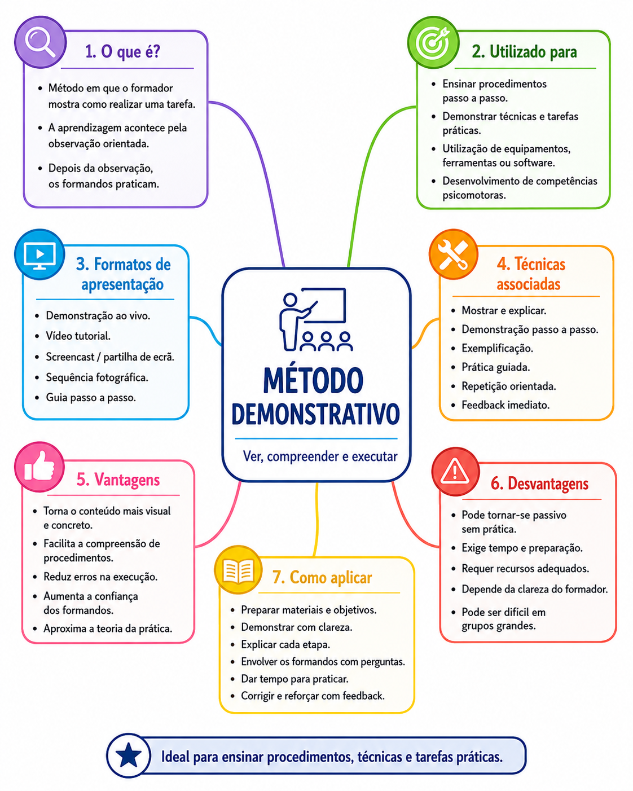

MF4 | Atividade 1
Métodos e Técnicas Pedagógicas
Para esta atividade, escolhi o Método Demonstrativo, por ser uma abordagem pedagógica adequada ao ensino de procedimentos, técnicas e tarefas práticas. Este método permite que o formando observe primeiro a execução de uma tarefa, compreenda as etapas envolvidas e pratique depois com orientação e feedback.
O trabalho foi desenvolvido em dois formatos visuais complementares:
- Infográfico digital — apresenta uma síntese visual do método, destacando a sua definição, vantagens, forma de aplicação e principais ideias-chave.
- Mapa mental — organiza os principais elementos do método, incluindo finalidades, formatos de apresentação, técnicas associadas, vantagens e limitações.

Reflexão final
O Método Demonstrativo valoriza a aprendizagem pela observação, pela explicação orientada e pela prática. É especialmente útil quando se pretende ensinar uma tarefa concreta, como a execução de um procedimento técnico ou a aplicação de uma sequência de trabalho.
Apesar das suas vantagens, deve ser acompanhado de momentos de participação ativa, para evitar que os formandos assumam apenas um papel passivo. Depois da demonstração, é importante promover a prática guiada, colocar questões, esclarecer dúvidas e dar feedback imediato.
Em síntese, este método ajuda a transformar a observação em competência, aproximando a teoria da prática e tornando a aprendizagem mais concreta, segura e significativa.